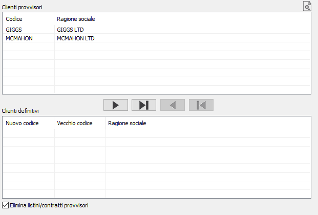
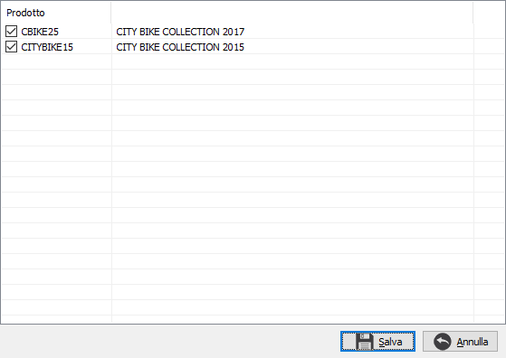

Definizione clienti provvisori
Il programma consente di rendere definitivi i clienti provvisori. La finestra è suddivisa in due sezioni; una superiore che contiene i clienti provvisori ed una inferiore dove saranno visualizzati i clienti resi definitivi, se attivata la codifica automatica, questo viene evidenziato. I pulsanti presenti al centro vengono utilizzati per spostare i clienti da una sezione all'altra. Tramite il bottone è possibile effettuare la ricerca per codice cliente provvisorio.

I pulsanti hanno il seguente significato (da sinistra a destra):
Sposta il cliente selezionato, oppure il primo della lista se non selezionato alcun cliente, da provvisorio a definitivo.
Sposta tutti i clienti da provvisori a definitivi.
Sposta il cliente selezionato, oppure il primo della lista se non selezionato alcun cliente, da definitivo a provvisorio.
Sposta tutti i clienti da definitivi a provvisori.
Per rendere un cliente definitivo, oppure annullarne la temporanea definizione, oltre all'utilizzo dei pulsanti, è sufficiente trascinarlo da una sezione all'altra. Nel caso sia attiva la codifica automatica viene anche proposto in automatico il nuovo codice del cliente, altrimenti viene riportato il codice uguale a quello del cliente provvisorio che è comunque modificabile. Al termine delle assegnazioni è necessario premere il pulsante Salva sulla toolbar oppure il tasto F10.
La definizione di un cliente esegue le seguenti operazioni:
Aggiunta del cliente provvisorio ai clienti definitivi.
Sostituzione del tipo cliente e dell'eventuale nuovo codice sulle offerte appartenenti al cliente provvisorio.

Definizione automatica dei prodotti inseriti nelle offerte appartenenti al cliente provvisorio (si veda il capitolo relativo); se la definizione dei clienti comporta la definizione di più di un prodotto viene aperta una finestra che mostra i prodotti da definire con una casella di spunta (già spuntata), è disponibile un menù tasto destro e tasti funzione per selezionare/deselezionare tutti i prodotti; salvando viene richiesta la conferma per l'avvio dell'elaborazione generale e saranno definiti solo i prodotti selezionati.Se la casella “Elimina listini/contratti provvisori “ non è spuntata sarà effettuata la generazione dei listini clienti e degli eventuali contratti dai listini/contratti provvisori, altrimenti questi ultimi saranno semplicemente annullati.
Aggiornamento del codice definitivo e della data di definizione sul cliente provvisorio.
Dal momento della definizione il cliente provvisorio non potrà essere più utilizzato.